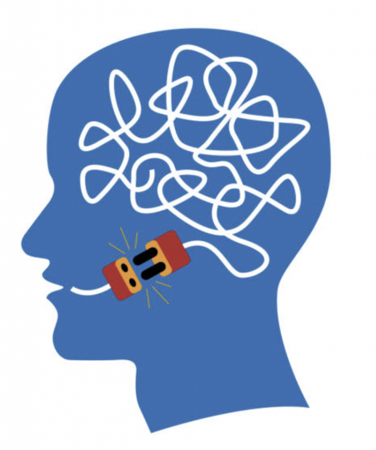

Afazi
Edinilmiş dil bozukluklarında iletişim becerilerini yeniden yapılandırmaya yönelik terapi.

Afazi Nedir?
Afazi, beynin dil fonksiyonlarını içeren bölümünün inme veya diğer nedenlerle hasar görmesiyle oluşan edinilmiş bir dil bozukluğudur. Konuşma, dinleme, okuma ya da yazma fonksiyonlarında problemlere neden olabilir.
Afazide birey; konuşmanın fonetik üretimini, konuşmanın anlaşılabilirliğini, tekrarlama becerisini, sözcük adlandırmayı, okumayı veya yazmayı kaybedebilir. Beyindeki hasarın yerine göre bu alanlardaki sorunlar farklılaşmaktadır.
Afazi Türleri
Afazinin pek çok türü vardır. En sık görülen iki tip:
- Broka afazisi: Akıcı olmayan, ağırlıklı olarak ifade edici dilin etkilendiği ve ses dizilerinin başlatılmasında güçlüklerin gözlendiği bir iletişim yetersizliğidir.
- Wernicke afazisi: Konuşma akıcıdır ancak ağırlıklı olarak işitsel algılama etkilenmiştir. Sözcük bulma sorunları yaygındır. Kimi durumlarda konuşma akıcı ve anlaşılır olsa da içerikten yoksun ve anlamsız olabilir.
Afazinin Nedenleri ve Seyri
Afaziye en sık yol açan neden beyin damar hastalıklarıdır. Bunun yanı sıra travma, tümör ve beyni etkileyen çeşitli hastalıklar da afaziye neden olabilir.
Afazi oluştuktan sonra zaman içinde spontan düzelme görülebilir. Bu süreç; hastanın yaşı, cinsiyeti, eğitim düzeyi, hasara neden olan hastalık, lezyonun yeri ve genişliği gibi birçok faktöre bağlı olarak her vakada farklı gerçekleşir.
Terapi Yaklaşımı
Afazi terapileri, bireyin dil becerilerine spontan iyileşmenin ötesinde fayda sağladığı bilimsel olarak ortaya konmuştur. Terapi süreci; uygun terapi yaklaşımının seçimine ve zamanlama ile sıklığın dikkatle belirlenmesine dayanır.
- Bireye özel değerlendirme ve hedef belirleme
- İfade edici ve alıcı dil çalışmaları
- Aile ve bakım verenlerle iletişim desteği
Terapi sürecinde bireyin jest, mimik, resim ve mümkünse yazmayı kullanarak iletişim kurması teşvik edilir. Temel amaç, bireyin yaşam kalitesini artırmak ve iletişim becerilerini en üst düzeyde desteklemektir.